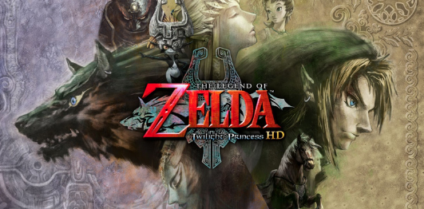
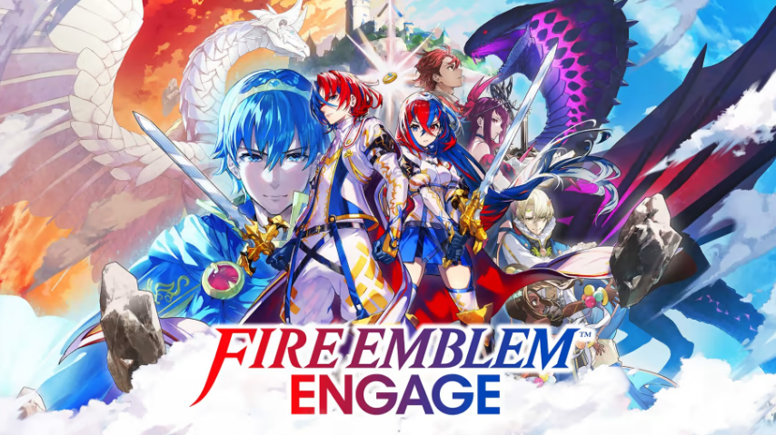
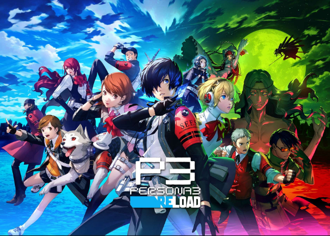

Top 5 Favorite Video Games
in my personal opinion :3
5. Groove Coaster: Wai Wai Party

Groove Coaster: Wai Wai Party is one of my favorite rhythm games because the gameplay is easy to understand and has some of my favorite songs. The game also has local multiplayer so I often play it with my friends. The song list includes anime/pop music, vocaloid music, video game music, Touhou music, and many more. This game has many collabs with characters and vtubers I like, such as famous vocaloid Hatsune Miku and popular vtuber Mori Calliope. Additionally, the game has many difficulties for each track and most of the hard difficulty tracks are very fun an exhilarating. Overall, this is one of my favorite rhythm games because of the fun tracks, character choices, and enjoyable music.
4. Honkai Star: Rail

Honkai: Star Rail is another of my favorite turned-based RPG because of the interesting characters and their interactions with the world and other characters. Honkai: Star Rail is a gacha type video game where you can spend in game currency (that can also be purchased with real currency) to gamble for characters to play as. While some find that feature to be off-putting, I do not think it hinders the gameplay experience, especially since the content and characters of the game is so peak. For example, the most recent area of the game is known as Penacony, which is an ideal dream world that has a hidden, dark side to it. In the main area, there are many reality breaking features, such as being able to walk up walls and using a pinball machine as a form of transportation. As for the characters, one of the new characters your character meets is Firefly, who acts as a kind tour guide, but seems to be hiding something from your character. The characters and settings having more than meets the eye makes the story compelling to follow.
3. The Legend of Zelda: Twilight Princess

The Legend of Zelda: Twilight Princess is my favorite game in THe Legend of Zelda series because of the interesting "dungeon" design. When it comes to most Zelda games, the gameplay follows a general set formula of exploring the main world based on the story, entering and solving a dungeon to get an item, and finding your way to the final objective. I really enjoy this formula for the Zelda games since I find it fun to find an item in the dungeon and using it to solve puzzles to reach the end boss enemy. For example, one of the most fun dungeons in the game is Arbiter's Grounds where you use a rideable top called the Spinner to ride rails to reach certain areas. In addition to the gameplay, I find the simple story to be interesting as well, especially with the story of one of the main characters Midna. Overall, the combo of fun gameplay and intriquing story makes Trilight Princess one of my favorite installments of the Legend of Zelda series.
2. Fire Emblem: Engage

Fire Emblem: Engage is the latest installment of one of my favorite video game series and is a tactical RPG. Tactical RPGs involve moving your characters/units around a grid based map in a way similar to chess, except units can move omnidirectional. Combat involves moving your unit near an enemy that is within the unit's attack range, which is normally 1 - 2 spaces away. Similar to a turned based RPG, combat is based on damage dealt, hp values, defense/resistance values, and avoid values. There are also equipment to keep track of and "supports" between the characters, which are a point based system on how close your characters are with eachother. All of these complexities may seem overwhelming, but I find the gameplay to be smooth and very fun. Strategizing what is the best position for your units to be in is crucial to winning and is the most fun part of the game. Fire Emblem: Engage, despite its simple story, has a new mechanic to the series known as Engage, which makes the gameplay morre complex by adding new powerful abilities that units can use for a set amount of turns. Overall, Engage is one of my favorite Fire Emblem games because of how complex the gameplay is and how fun it is to strategize the best positions and unit builds.
1. Persona 3 Reload

Persona 3 Reload is a remake of my favorite turned based JRPG of all time, Persona 3. The Persona series generally involves high schoolers or young adults using the power of Persona in an alternate world to fight shadows and stop an overarching antagonist. Persona 3 in particular involves the SEES group trying to put an end to the Dark Hour, which is a secret time between 12 am and 1 pm that is causing people to become incoherent and sick. One of the most interesting parts of the game are the characters and their interactions with other characters and the dangerous Dark Hour. The main characters are mostly high schoolers and how they cope with the fact that they have the fate of the world on their hands creates a very compelling story. Additionally, the gameplay is fun with the turned0based combat and the daily life of the main character, which includes going to school and hanging out with different colorful characters. Finding out other character's personality and backstory is one of the appeals of the game.
The game also has a very uplifting message, which is about living life to the fullest. This idea is perfectly encapsulated with a quote from my favorite character Aigis (who is a robot persona user): "You don't have to save the world to find meaning in life... Sometimes, all you need is something simple, like someone to take care of". Personally, I find this message to be very important to the game and to real life because having a simple purpose in life is often something that people tend to forget leading people to usually lose motivation to continue. Overall, the game's message, gameplay, and characters are the main reasons why I find Persona 3 Reload to be my favorite video game.